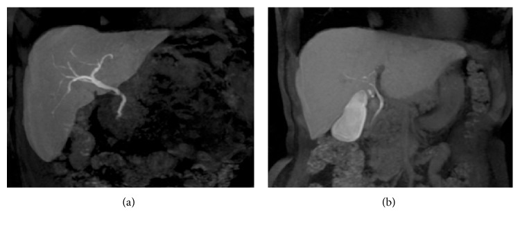
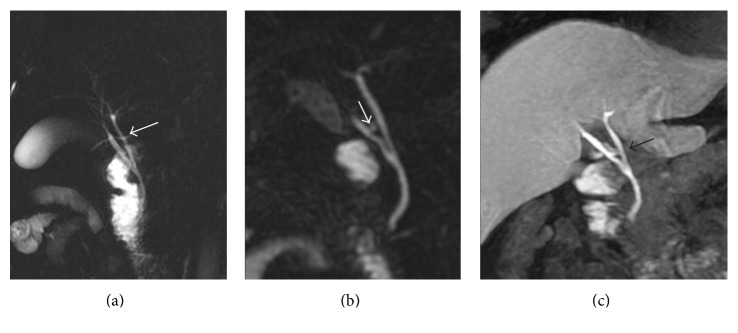
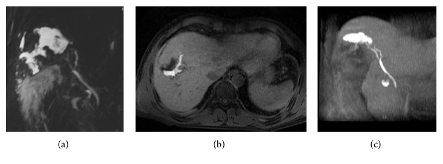
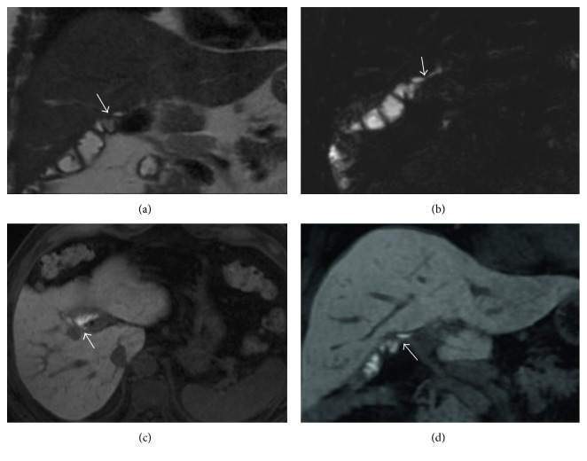

107 — MRCP & gadoxetic acid thì gan–mật (HBP): kỹ thuật, ngưỡng và cách đọc / MRCP & gadoxetic acid hepatobiliary phase: technique, thresholds and interpretation
Tags: protocol:MRCP protocol:MRI-gan protocol:gadoxetic-acid pattern:hep-duong-mat vung:duong-mat incidentaloma:hep-duong-mat
Mức chắc chắn (certainty): tổng hợp y văn (literature synthesis) — tổng hợp từ 1 review kỹ thuật có ảnh (PMC5350537, CC BY), 1 nghiên cứu 259 bệnh nhân về chất lượng HBP (PMC8961017, CC BY-NC), 1 review ảnh đường mật trong gan (PMC13652791, CC BY), 1 bài về fMRC sau phẫu thuật đường mật (PMC7007050, CC BY); chưa gắn một ca nguyên văn duy nhất của nhóm.
Bài này là bài KỸ THUẬT NỀN của cụm mật. Các bài 131 – Tắc mật, 132 – Hẹp đường mật không xác định, 133 – Hẹp miệng nối sau ghép gan, 137 – Theo dõi stent/dẫn lưu mật, 138 – Sỏi trong gan dùng MRCP/HBP như công cụ; bài 107 giải thích vì sao chọn chuỗi xung nào, tiêm thuốc gì, chờ bao lâu, và khi nào KHÔNG được tin ảnh HBP.
1. Tổng quan — hai "công cụ" khác bản chất, đừng đánh đồng
- MRCP (magnetic resonance cholangiopancreatography) — hình ảnh T2 nặng: dựa trên chuỗi xung T2-weighted rất nặng (heavily T2-weighted), dịch mật tăng tín hiệu rất mạnh còn mô đặc/tĩnh mạch tối. Vì nước đứng yên có T2 dài, mật trong lòng ống sáng; sỏi, khí, mô u, cục máu không có proton linh động → khuyết tín hiệu (signal void) trong lòng ống. Không cần thuốc cản quang cho MRCP T2.
- 2D thick-slab (single-shot FSE): một lát dày 20–60 mm, chụp nhanh, ít nhiễu chuyển động; tốt để nhìn toàn cảnh cây mật, nhưng không đánh giá được chi tiết thành ống và dễ chồng hình ruột/dịch.
- 3D thin-slab (respiratory-triggered 3D FRFSE): lát 1–2 mm, dựng MIP; không gian phân giải cao hơn, thấy nhánh nhỏ, biến thể giải phẫu, hẹp không hoàn toàn; nhược điểm thời gian chụp dài, nhạy với chuyển động/thở.
- TẠI SAO sỏi tối trên MRCP: sỏi sắc tố canxi bilirubinate hoặc sỏi cholesterol mất tín hiệu vì không có proton tự do; bản thân canxi cũng không phát tín hiệu. Sỏi rất nhỏ (< 2–3 mm) có thể bị bỏ sót; bóng khí, clip kim loại, dòng chảy có thể giả sỏi.
- Gadoxetic acid (Gd-EOB-DTPA; Primovist/Eovist) — thuốc đối quang đặc hiệu gan: sau tiêm, khoảng 50% được tế bào gan lành bắt qua OATP1B1/B3, 50% thải qua thận; trong gan, thuốc thải vào ống mật qua MRP2. Vì Gd làm ngắn T1, mô gan và mật trở nên sáng trên T1.
- Thời gian: thuốc vào tế bào gan từ ~3 phút, bắt đầu thải vào mật ~10 phút, thì gan–mật (hepatobiliary phase — HBP) đạt rõ ở 10–20 phút, đỉnh 20–40 phút, nửa đời ~2 giờ. Vì vậy HBP chuẩn = 20 phút sau tiêm; có thể chụp lại 40–60 phút khi chức năng gan kém.
- Liều chuẩn 0,025 mmol/kg (0,1 mL/kg) — liều thấp hơn thuốc ngoại bào (0,1 mmol/kg), nên thì động mạch yếu hơn và dễ giả ảnh do thở (transient dyspnea) ở thì động mạch.
- Vì sao HBP đặc hiệu: tổn thương không có tế bào gan (di căn, u đường mật, nang, áp-xe) không bắt thuốc → tối (hypointense) trên nền gan sáng; HCC/HCA có thể bắt hoặc không tùy mức biệt hóa. HBP không thay thế động học bắt thuốc (arterial hyperenhancement + washout).
- Ngưỡng định lượng nằm lòng:
- Bilirubin toàn phần > 3 mg/dL làm giảm bắt thuốc và giảm thải mật → HBP muộn/kém, cần chụp 20–180 phút hoặc liều gấp đôi (theo kinh nghiệm từng trung tâm; chưa có khuyến cáo thống nhất).
- Ngưỡng dự báo HBP kém (FLIS thấp) = bilirubin 2,1 mg/dL: độ nhạy 95,1%, độ đặc hiệu 89,0% ở tập phân tích (n = 184); tập kiểm chứng (n = 75): 92,1% / 83,8% (Hwang JA et al., Korean J Radiol 2022, PMC8961017). Mỗi 1 mg/dL bilirubin tăng làm OR 1,62 (KTC 95% 1,32–1,98) cho HBP kém.
- FLIS (functional liver imaging score) 0–6 = tổng 3 thành phần, mỗi thành phần 0–2: (1) mức tăng tín hiệu nhu mô gan, (2) mức thải thuốc vào đường mật, (3) tín hiệu tĩnh mạch cửa. FLIS 0–3 = thấp, 4–6 = cao. Trong 259 bệnh nhân ung thư đường mật ngoài gan: 54,1% FLIS thấp; 47,1% nhóm FLIS thấp có ảnh HBP dưới mức chấp nhận, so với 6,1% ở nhóm FLIS cao (p < 0,001).
- Góc lật (flip angle): tối ưu cho đường mật 35–40°, cho nhu mô gan 25–30°; góc > 20° được khuyến cáo để tăng SNR/CNR đường mật.
2. Mẫu hình + chẩn đoán phân biệt theo câu hỏi lâm sàng (gamut)
Đừng bắt đầu bằng "chẩn đoán bệnh"; hãy bắt đầu bằng "câu hỏi cần trả lời". Sáu câu hỏi quyết định chuỗi xung:
- Giải phẫu có bất thường không? (trước mổ cắt túi mật/ghép gan/cắt gan): biến thể ống gan phải, ống gan phụ, chỗ đổ ống túi mật, hội chứng Mirizzi. → 3D MRCP + HBP MIP.
- Trong lòng ống có gì? Sỏi ống mật chủ, sỏi trong gan, bùn mật, khí, u nhú (IPNB), cục máu, ký sinh trùng. → MRCP T2 là chính; HBP giúp phân biệt khối đặc không bắt thuốc với sỏi.
- Có hẹp không? Ở đâu? Dài bao nhiêu? Hẹp miệng nối (anastomotic stricture), PSC, hẹp do thiếu máu, hẹp ác tính. → MRCP T2 đo chiều dài/hình dạng; HBP không đáng tin để chẩn đoán hẹp (xem mục 3).
- Có rò mật không? Sau cắt túi mật, cắt gan, ghép gan, chấn thương: dịch quanh ống mật không chứng minh rò; chỉ thuốc từ đường mật tràn vào khoang dịch mới chứng minh rò hoạt động. → HBP muộn 20–25, 60–90, 150–180 phút.
- Nang/dãn có thông với đường mật không? Nang ống mật chủ (Todani), bệnh Caroli, nang đường mật (biliary hamartoma), nang quanh ống mật (peribiliary cyst). → MRCP T2 thấy cấu trúc; HBP thấy thuốc vào nang nếu có thông.
- Miệng nối còn thông và còn chức năng không? Sau Roux-en-Y, ghép gan: HBP thấy mật thuốc qua miệng nối, mức thuốc trong quai ruột phản ánh độ thông.
- Gợi nhớ "ABCDEF" cho chỉ định MRCP/HBP: Anatomy (giải phẫu), Bile leak (rò mật), Calculus (sỏi), Duct stricture (hẹp), Ectasia/cyst (dãn/nang), Function (chức năng miệng nối/thải mật).
3. Bảng so sánh phân biệt (ma trận đối chiếu)
3.1. So sánh phương thức — chọn gì cho câu hỏi nào
| Phương thức | Điểm mạnh | Chốt vào (rule-in) | Chốt loại (rule-out) | Giới hạn/ghi chú |
|---|---|---|---|---|
| MRCP T2 (2D + 3D) | Không thuốc, nhanh, toàn cảnh cây mật; độ chính xác tương đương ERCP cho hẹp lành/ác ngoài gan | Khuyết tín hiệu trong lòng ống + ống giãn phía trên = sỏi/hẹp | Cây mật bình thường, không giãn, không khuyết tín hiệu gần như loại trừ tắc hoàn toàn | Giả sỏi do khí/clip/dòng chảy; bỏ sót sỏi < 2–3 mm; không đánh giá thành ống |
| CE-MRC / HBP (T1 sau gadoxetic) | Chứng minh thông/thải mật, phát hiện rò hoạt động, đánh giá chức năng miệng nối | Thuốc vào khoang dịch/nang = rò/thông; thuốc qua miệng nối = còn thông | Không thấy thuốc trong khoang dịch khi đã đủ thì muộn = không rò hoạt động | Phụ thuộc chức năng gan/bilirubin; kém nhạy với hẹp; cần 20–180 phút |
| CT bụng có cản quang | Nhanh, phát hiện vôi hóa, khí, biến chứng, tụy | Sỏi vôi hóa, khí trong ống, tụ dịch, giãn ống | Không thấy sỏi cản quang không loại trừ sỏi sắc tố | Bỏ sót sỏi không vôi hóa; bức xạ |
| ERCP | Điều trị được (lấy sỏi, đặt stent), lấy dịch/mô | Nhìn trực tiếp + can thiệp | — | Xâm lấn, viêm tụy sau ERCP 5–10%, thủng/nhiễm trùng |
| Cholangioscopy (SpyGlass) | Nhìn trực tiếp + sinh thiết | Tổn thương trong lòng ống nghi IPNB/ung thư | Niêm mạc bình thường trong vùng nghi ngờ | Xâm lấn, chi phí, không phải tuyến đầu |
3.2. Ma trận bệnh — dấu hiệu chốt trên MRCP/HBP
| Thực thể (entity) | Hình ảnh điển hình | Chốt vào (rule-in) | Chốt loại (rule-out) | Gợi ý xác nhận |
|---|---|---|---|---|
| Sỏi ống mật chủ (choledocholithiasis) | Khuyết tín hiệu tròn/bầu dục trong ống giãn, có meniscus mật quanh sỏi | Khuyết tín hiệu trong lòng ống + ống giãn phía trên + không bắt thuốc trên HBP | Khuyết tín hiệu di chuyển/đổi hình theo tư thế hoặc có đuôi khí → khí, không phải sỏi | MRCP 3D + CT đối chiếu; ERCP nếu triệu chứng |
| Rò mật sau mổ (bile leak) | Tụ dịch T2 sáng quanh ống mật/miệng nối; HBP: thuốc tràn vào tụ dịch | Thuốc gadoxetic vào trong khoang dịch = rò hoạt động; kết hợp MRCP T2 + HBP: Se 79% vs 59% so với MRCP T2 đơn thuần, accuracy 84% vs 58% | Tụ dịch T2 sáng nhưng KHÔNG có thuốc ở 60–90 phút → không chứng minh rò | HBP 20–25 + 60–90 phút (Se 92,9%); đủ 3 mốc 20–25/60–90/150–180: Se 96,4%, Sp 100%, Acc 97,1% |
| Hẹp miệng nối mật–ruột (anastomotic stricture) | Chỗ hẹp + giãn ống mật trong gan; HBP có thể thấy thuốc qua chỗ hẹp | MRCP T2: Se 94,4%, Sp 80%, PPV 94,4%, NPV 80% | CE-MRC T1: Se chỉ 40%, Sp 75%, PPV 80%, NPV 33,3% → KHÔNG dùng CE-MRC đơn thuần để loại trừ hẹp | MRCP 3D + HBP bổ trợ; nong/thử stent nếu triệu chứng |
| Viêm xơ đường mật nguyên phát (PSC) | Hẹp và giãn xen kẽ kiểu "chuỗi hạt" (beaded) và "cây tỉa" (pruned tree) | Nhiều hẹp ngắn + giãn xen kẽ + thành ống dày | Một chỗ hẹp đơn độc, không giãn xen kẽ → nghĩ ác tính/nguyên nhân khác | MRCP 3D; HBP đánh giá chức năng; CA 19-9/ERC nếu nghi CCA |
| Nang ống mật chủ (choledochal cyst) | Dãn hình túi/hình nang thông với cây mật; Todani I–V | Nang thông với đường mật + thuốc vào nang trên HBP = có thông | Nang không thông (nang gan đơn thuần) | MRCP + HBP; nguy cơ ung thư đường mật tăng theo tuổi — cần theo dõi |
| U nhú trong lòng ống (IPNB) | Khối đặc trong lòng ống, có thể bắt thuốc, gây dãn ống không tương xứng | Khối trong lòng ống bắt thuốc + dãn ống phía trên | Khuyết tín hiệu không bắt thuốc, di động → sỏi/bùn | MRCP + DWI + HBP; cholangioscopy/sinh thiết |
| HCC/khối gan trên HBP | Nhân tối trên HBP (không có tế bào gan bắt thuốc) | Tối trên HBP + bắt mạnh thì động mạch + washout = HCC | Tối trên HBP nhưng không bắt động mạch/washout → không đủ chẩn đoán HCC | Động học DCE + DWI + HBP; phân độ LI-RADS (bài 121) |

(a) Sau Gd-EOB-DTPA, thì gan–mật 20 phút: cây mật trong gan sáng rõ trên nền gan sáng. (b) Ở bệnh nhân khác dùng gadobenate dimeglumine, thì thải mật cần ≥ 60 phút và đường mật không nét bằng. Nguồn: Palmucci S et al., Gastroenterol Res Pract 2017 (PMC5350537), Fig. 1, CC BY 4.0.3.3. Vì sao HBP giỏi "chứng minh thông" nhưng kém "chứng minh hẹp"
- Nguyên lý: HBP chỉ cho biết có thuốc đến được vị trí đó hay không. Nếu thuốc qua được chỗ hẹp, điều đó chứng minh còn thông, nhưng không đo được mức độ hẹp và không loại trừ hẹp có ý nghĩa (dòng mật vẫn có thể qua khi hẹp < 70–80%). Vì vậy trong nghiên cứu 21 bệnh nhân, CE-MRC chỉ đạt Se 40% cho hẹp miệng nối, thấp hơn nhiều so với MRCP T2 (94,4%).
- Hệ quả thực hành: MRCP T2 là phương thức chính để đánh giá hẹp; HBP là phương thức chính để đánh giá rò và chức năng. Đừng đảo vai trò.
4. Protocol chụp + cách chấm chất lượng HBP
4.1. Chuẩn bị
- Nhịn ăn 4–6 giờ (giảm nhu động ruột/dịch dạ dày), uống nước nhỏ giọt nếu không chống chỉ định.
- Xét nghiệm trước chụp: bilirubin toàn phần, creatinin/eGFR, men gan, INR; hỏi dị ứng thuốc cản quang, thai kỳ, máy tạo nhịp/thiết bị cấy, tiền sử phẫu thuật đường mật.
- Thận trọng: eGFR < 30 mL/phút/1,73 m² — cân nhắc theo chính sách cơ sở (nguy cơ xơ hóa hệ thống do gadolinium rất thấp với gadoxetic nhưng không bằng 0); thai kỳ tránh nếu không thật cần.
- Đường truyền tĩnh mạch 20–22 G; không dùng thuốc ngoại bào thay thế nếu câu hỏi là chức năng đường mật.
4.2. Trình tự chuỗi xung tối thiểu
| Thì/chuỗi | Mục đích | Ghi chú kỹ thuật |
|---|---|---|
| T2 SSFSE/HASTE axial + coronal | Phát hiện dịch, giãn ống, nang, tụy, tổn thương gan | Lát 4–6 mm; fat-sat; nín thở nếu được |
| 3D MRCP (FRFSE, respiratory-triggered) | Cây mật 3D, biến thể, sỏi, hẹp | Lát 1–2 mm, MIP; chụp trước thuốc |
| DWI (b=50/400/800) | Khối đặc/áp-xe; hỗ trợ phân biệt | ADC map; không thay thế HBP |
| T1 3D GRE fat-sat trước thuốc | Nền gan, máu, mỡ, canxi | In/opposed phase nếu cần |
| Động học sau gadoxetic: động mạch 20–30 giây, cửa 60–70 giây, chuyển tiếp 3 phút | Động học bắt thuốc của u, mạch, nhu mô | Gadoxetic 0,025 mmol/kg, tốc độ 1 mL/s, rửa 20–30 mL NaCl; pha loãng/chậm để giảm giả ảnh do thở |
| HBP 20 phút (chụp lại 40–60 phút nếu chức năng gan kém) | Gan sáng, tổn thương không có tế bào gan tối; MIP đường mật | Góc lật 25–30° cho nhu mô; 35–40° cho đường mật |
| HBP muộn 60–90 và 150–180 phút (khi nghi rò) | Chứng minh rò hoạt động, đánh giá miệng nối | Không bỏ giai đoạn muộn nếu câu hỏi là rò |
- Dựng ảnh: MIP dày cho cây mật, MIP mỏng/curved planar cho chỗ hẹp; so sánh T2 MRCP và HBP trên cùng mặt phẳng.
- Thời gian chụp tối thiểu: 25–30 phút cho bộ cơ bản; 60–180 phút nếu cần đánh giá rò.
4.3. Chấm FLIS và quyết định đọc HBP
| Thành phần FLIS | 0 điểm | 1 điểm | 2 điểm |
|---|---|---|---|
| Tăng tín hiệu nhu mô gan | Không thấy/gan không sáng hơn cơ | Trung bình | Gan sáng rõ, đồng nhất |
| Thải thuốc vào đường mật | Không thấy mật sáng | Mờ, chỉ thấy ống chính | Thấy rõ ống trong gan |
| Tín hiệu tĩnh mạch cửa | TM cửa sáng hơn gan (dấu TM cửa muộn) | Trung bình | TM cửa tối hơn gan |
- Cách tính: cộng 3 thành phần = 0–6; 0–3 = FLIS thấp → ảnh HBP không đáng tin, 47,1% trường hợp dưới mức chấp nhận; 4–6 = FLIS cao → chỉ 6,1% dưới mức chấp nhận.
- Quy tắc vàng: không kết luận "không có tổn thương/không rò" trên một HBP FLIS thấp; chuyển sang MRCP T2 + CT + theo dõi, hoặc chụp lại muộn.
flowchart TD
A[Nghi bệnh đường mật] --> B[Bilirubin toàn phần + eGFR]
B -->|Bilirubin ≤ 2,1 mg/dL| C[Gadoxetic acid + MRCP đầy đủ]
B -->|Bilirubin 2,1-3 mg/dL| D[Vẫn chụp; dự phòng HBP kém, chụp lại 40-60 phút]
B -->|Bilirubin trên 3 mg/dL| E[MRCP T2 + CT là chính; gadoxetic nếu thật cần]
C --> F[Chấm FLIS tại 20 phút]
D --> F
E --> G[Không dựa vào HBP để loại trừ]
F -->|FLIS 4-6| H[Đọc HBP + CE-MRC: rò, miệng nối, tổn thương]
F -->|FLIS 0-3| I[Không kết luận trên HBP; dựa T2 MRCP/CT, chụp muộn]
H --> J{Câu hỏi là rò mật?}
J -->|Có| K[Thêm 60-90 và 150-180 phút]
J -->|Không| L[Kết thúc, dựng MIP]
5. Biến thể bình thường và cạm bẫy
- Biến thể giải phẫu hay gặp (đừng gọi là bệnh): ống gan phải sau (right posterior sectoral duct) đổ vào ống gan trái hoặc ống gan chung; ống gan phụ (accessory duct); ống túi mật đổ thấp/cao; ống gan phải trước–sau hội lưu muộn. Trước mổ cắt gan/cắt túi mật, phải mô tả biến thể — 3D MRCP + HBP MIP giúp thấy rõ.
- Cạm bẫy 1 — "khuyết tín hiệu = sỏi" trên MRCP T2: bóng khí (sau ERCP/đặt stent), clip kim loại, dòng chảy mạnh, van ống mật, cục máu đều tối. Đối chiếu CT và hình dạng/đuôi khí; khí thường di chuyển và có mức nằm ngang.
- Cạm bẫy 2 — "tụ dịch cạnh miệng nối = rò": T2 chỉ thấy dịch, không chứng minh thông. Chỉ thuốc từ đường mật vào khoang dịch mới là rò hoạt động; nếu không có thuốc ở 60–90 phút, vẫn cần thì 150–180 phút khi giãn ống/gan kém.
- Cạm bẫy 3 — dùng CE-MRC để loại trừ hẹp: Se 40% — bỏ sót hẹp là sai lầm thường gặp. MRCP T2 mới là chìa khóa.
- Cạm bẫy 4 — bilirubin cao vẫn tin HBP: > 3 mg/dL làm giảm thải mật; FLIS thấp; không kết luận "không rò/không tổn thương".
- Cạm bẫy 5 — nhầm HBP tối với HCC: nhân tối HBP có thể là di căn, áp-xe nhỏ, nang, u lành, vùng xơ. Cần động học động mạch + washout + DWI; HBP đơn thuần không đủ (xem LI-RADS, bài 121).
- Cạm bẫy 6 — clip/bơm khí sau ERCP: gây khuyết tín hiệu giả sỏi và giả hẹp trên MIP; chụp lại sau khi khí tan hoặc đối chiếu CT.
- Cạm bẫy 7 — MIP che mất tổn thương: MIP dày có thể che sỏi nhỏ/hẹp ngắn; luôn đọc lát mỏng gốc, không chỉ MIP.
- Cạm bẫy 8 — tương tác thuốc/thận: eGFR < 30 cân nhắc; không dùng gadoxetic khi có chống chỉ định gadolinium; an toàn thai kỳ chưa được thiết lập.

(a, b) MRCP 2D/3D thấy hội lưu thấp và nghi ống gan phải phụ (mũi tên trắng). (c) HBP làm rõ ống gan phải phụ và ống túi mật (mũi tên đen) đổ riêng vào ống gan trái. Đây là biến thể cần mô tả trước mổ, không phải bệnh. Nguồn: Palmucci S et al., PMC5350537, Fig. 3, CC BY 4.0.
(a) MRCP T2: tụ dịch lớn tăng tín hiệu ở phần cao gan. (b, c) Thì thải mật: thuốc vào trong tụ dịch → chứng minh rò mật hoạt động. Nguồn: Palmucci S et al., PMC5350537, Fig. 6, CC BY 4.0.6. Tự lượng giá — Blind Quiz
Ca 1 — Bệnh nhân 52 tuổi, cắt túi mật nội soi 5 ngày trước, sốt nhẹ, đau hạ sườn phải, dịch quanh gan. MRCP T2 có tụ dịch; HBP 20 phút chưa thấy thuốc trong tụ dịch.
- Gợi ý lâm sàng: sau cắt túi mật, có tụ dịch nhưng chưa rõ có thông với đường mật.
- Câu hỏi: Tụ dịch T2 sáng có đủ chẩn đoán rò? Bước tiếp theo là gì?
Bấm để hiện đáp án (findings + chẩn đoán)
- Dấu hiệu: MRCP T2 thấy tụ dịch nhưng không chứng minh thông; HBP 20 phút chưa thấy thuốc vào tụ dịch.
- Chẩn đoán: chưa loại trừ rò mật hoạt động — cần thì muộn 60–90 phút, và nếu vẫn âm, 150–180 phút. Trong nghiên cứu 34 bệnh nhân, 20–25 phút đơn thuần chỉ đạt Se 42,9%, còn 20–25 + 60–90 phút đạt 92,9%; đủ 3 mốc đạt Se 96,4%, Sp 100%, Acc 97,1%.
- Xử trí: nếu thuốc vào tụ dịch → rò hoạt động, cần dẫn lưu/ERCP stent; nếu không thấy thuốc sau 150–180 phút và lâm sàng ổn → theo dõi.
- Nguồn số: Palmucci S et al., Gastroenterol Res Pract 2017 (PMC5350537), CC BY 4.0.
Ca 2 — Bệnh nhân 60 tuổi, Roux-en-Y sau cắt nang ống mật chủ; MRCP T2 thấy miệng nối, HBP 20 phút thấy thuốc qua miệng nối và một ít trong quai ruột.

- Gợi ý lâm sàng: không sốt, không vàng da; câu hỏi là miệng nối còn thông không.
- Câu hỏi: HBP bổ sung gì so với MRCP T2? Có loại trừ được hẹp không?
Bấm để hiện đáp án (findings + chẩn đoán)
- Dấu hiệu: (a) T2 coronal và (b) 3D MRCP cho hình thái miệng nối; (c, d) HBP cho thuốc qua miệng nối và mức thuốc trong quai ruột — bằng chứng còn thông và còn chức năng.
- Chẩn đoán: miệng nối mật–ruột còn thông, còn chức năng.
- Giới hạn: HBP không loại trừ hẹp có ý nghĩa — CE-MRC chỉ đạt Se 40% cho hẹp miệng nối, so với MRCP T2 94,4%. Nếu còn triệu chứng viêm đường mật tái diễn, cần MRCP T2 lát mỏng + đánh giá thêm (bài 133).
- Nguồn: Palmucci S et al., PMC5350537, Fig. 9, CC BY 4.0.
Ca 3 — Bệnh nhân 68 tuổi, vàng da, bilirubin toàn phần 8 mg/dL. Yêu cầu "chụp HBP để xem có rò sau mổ không".
- Gợi ý lâm sàng: vàng da rõ, chức năng gan/bilirubin cao; câu hỏi là rò mật.
- Câu hỏi: Có nên tin HBP ở bệnh nhân này? Chọn protocol nào?
Bấm để hiện đáp án (findings + chẩn đoán)
- Dấu hiệu: bilirubin 8 mg/dL — cao hơn ngưỡng 3 mg/dL làm giảm thải mật, và cao hơn ngưỡng dự báo FLIS thấp 2,1 mg/dL (Se 95,1%, Sp 89,0%).
- Chẩn đoán: HBP sẽ kém/không đáng tin; không được kết luận "không rò" dựa trên HBP.
- Xử trí: ưu tiên MRCP T2 + CT bụng để đánh giá giãn ống/tụ dịch; nếu vẫn cần chứng minh rò, chụp HBP muộn 60–90 và 150–180 phút và chấp nhận chất lượng thấp; cân nhắc ERCP/chụp đường mật qua ống dẫn lưu.
- Nguồn số: Hwang JA et al., Korean J Radiol 2022 (PMC8961017), CC BY-NC 4.0; Palmucci S et al., PMC5350537.
Bài liên quan chéo
- 100 – Tổng quan hệ Bụng
- 101 – Protocol chụp bụng
- 110 – Giải phẫu bụng cắt lớp
- 123 – Nang gan & bệnh gan đa nang (PLD, Caroli) vs nang đường mật
- 129 – IPNB & u nhầy đường mật
- 130 – Túi mật: viêm, sỏi, polyp
- 131 – Tắc mật: phân biệt trong/ngoài gan
- 132 – Hẹp đường mật không xác định & cholangioscopy
- 133 – Hẹp miệng nối đường mật sau mổ/ghép gan
- 137 – Theo dõi stent/dẫn lưu mật: di trú, tắc, nhiễm trùng
- 138 – Sỏi trong gan & viêm đường mật mủ tái phát
- 910 – Dẫn lưu áp-xe & đường mật qua da
Ảnh
- Tên file
107_<mô tả>_<modality>_PMC...-<Fig>-<license>.jpg; nguồn + giấy phép từng ảnh trongimages/CREDITS.md. - Tất cả ảnh dùng ở đây là CC BY 4.0; giữ nguyên bản, không crop/kéo giãn.
- Không tải ảnh từ AuntMinnie/paywall; nguồn đóng chỉ dẫn link ở
sources.md.
Không dùng để chẩn đoán độc lập khi chưa có người hướng dẫn.